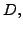
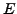
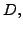
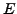

Consider symmetric saddle-point problems of the form
We show that many popular conjugate gradient-based methods for solving
( ) can be reformulated as applying the (preconditioned)
conjugate gradient method to (
) can be reformulated as applying the (preconditioned)
conjugate gradient method to ( ) for some   and
We also provide conditions for guaranteeing that (
) for some   and
We also provide conditions for guaranteeing that ( ) is
positive definite. Using these conditions we propose new conjugate
gradient-based methods for solving (
) is
positive definite. Using these conditions we propose new conjugate
gradient-based methods for solving ( ) and give numerical
results for problems from optimization and fluid dynamics.
) and give numerical
results for problems from optimization and fluid dynamics.